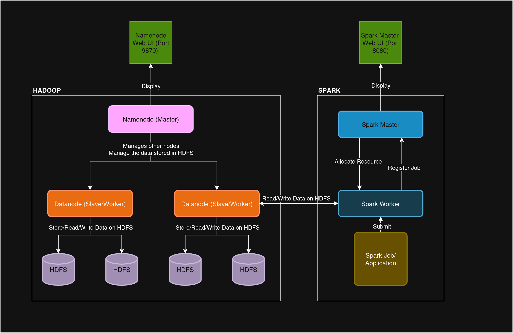

Guide: Create Big Data Cluster Using Docker
The Big Picture: Our Architecture
This guide uses a simple, four-container setup to create a mini big data ecosystem on your local machine.
Hadoop (HDFS)
- Namenode: The "manager" that keeps track of all file locations. It knows which pieces of a file are on which Datanode.
- Datanode: The "storage unit" that physically stores blocks of data and serves them when requested.
Spark
- Spark Master: The "team leader" that receives your job and allocates resources for the work to be done.
- Spark Worker: The "doer" that executes the tasks. It asks the Namenode for data locations and then gets the data directly from the Datanodes to process it.
The Setup: 3 Simple Steps
Create the Blueprint
Create a folder for your project, and inside it, a file named docker-compose.yml. Paste this code:
version: '3.8'
services:
spark-master:
image: bde2020/spark-master:3.3.0-hadoop3.3
container_name: spark-master
ports:
- "8080:8080"
- "7077:7077"
networks:
- bigdata_network
spark-worker:
image: bde2020/spark-worker:3.3.0-hadoop3.3
container_name: spark-worker
depends_on:
- spark-master
environment:
- SPARK_MASTER=spark://spark-master:7077
networks:
- bigdata_network
namenode:
image: bde2020/hadoop-namenode:2.0.0-hadoop3.2.1-java8
container_name: namenode
ports:
- "9870:9870"
volumes:
- hadoop_namenode:/hadoop/dfs/name
environment:
- CLUSTER_NAME=test
networks:
- bigdata_network
datanode:
image: bde2020/hadoop-datanode:2.0.0-hadoop3.2.1-java8
container_name: datanode
depends_on:
- namenode
volumes:
- hadoop_datanode:/hadoop/dfs/data
environment:
- SERVICE_PRECONDITION=namenode:9870
networks:
- bigdata_network
networks:
bigdata_network:
driver: bridge
volumes:
hadoop_namenode:
hadoop_datanode:
Launch the Cluster
In your terminal, from the same folder, run this command:
docker-compose up -dVerify Everything is Working
Check the web dashboards.
1. Spark UI: http://localhost:8080

2. HDFS UI: http://localhost:9870 (Go to the "Datanodes" tab to verify)

Running Your First Job: Word Count
Data flows from HDFS, gets processed by Spark, and the result is printed back to your screen.
Enter the Namenode Container
We'll use the Namenode to put data into our distributed file system. Open a terminal and type:
docker exec -it namenode bashAdd Data to HDFS
First, create a simple text file inside the container, then copy it into HDFS:
# Create a local file inside the container
echo "hello spark hello hadoop spark is great" > test.txt
# Create a directory in HDFS and put the file there
hdfs dfs -mkdir -p /input
hdfs dfs -put test.txt /inputRun the PySpark Code
Open another terminal and connect to the Spark Master container to run the job:
docker exec -it spark-master /spark/bin/pysparkOnce inside the PySpark shell, enter the following Python code line by line:
text_file = sc.textFile("hdfs://namenode:9000/input/test.txt")
counts = text_file.flatMap(lambda line: line.split(" ")) \
.map(lambda word: (word, 1)) \
.reduceByKey(lambda a, b: a + b)
output = counts.collect()
for (word, count) in output:
print(f"{word}: {count}")
exit()Check Your Result!
You should see the final counts printed to your screen:
hello: 2
great: 1
spark: 2
hadoop: 1
is: 1